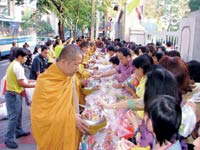

พระบาทสมเด็จพระเจ้าอยู่หัว พร้อมด้วย
สมเด็จพระนางเจ้าฯ พระบรมราชินีนาถ สมเด็จพระบรมโอรสาธิราช
สยามมกุฎราชกุมาร เสด็จฯตรวจแถวทหารรักษาพระองค์ ในพิธีถวายสัตย์ปฏิญาณตนและสวนสนาม
เนื่องในพระราชพิธีเฉลิมพระชนมพรรษา ประจำปี 2548 ณ ลานพระราชวังดุสิต
|
ในหลวง
ทรงมีพระราชดำรัสในพิธีถวายสัตย์ปฏิญาณตนของทหารรักษาพระองค์
ถึงสถานการณ์ปัจจุบันในบ้านเมืองไม่น่าไว้วางใจนัก เพราะภัยอันตรายและความไม่เป็นปกตินานาประการ
ทรงให้ทหารตระหนักถึงหน้าที่ความรับผิดชอบในการป้องกันประเทศและปกป้องคุ้มครองประชาชนให้ชีวิตอยู่ด้วยความร่มเย็น
เมื่อเวลา 16.30 น. วันที่ 2 ธันวาคม ที่ลานพระราชวังดุสิต(พระบรมรูปทรงม้า)
มีพิธีถวายสัตย์ปฏิญาณตน และสวนสนามของทหารรักษาพระองค์ เนื่องในพระราชพิธีเฉลิมพระชนมพรรษาพระบาทสมเด็จพระเจ้าอยู่หัว
ประจำปี 2548 โดยมี พล.อ.เรืองโรจน์ มหาศรานนท์ ผู้บัญชาการทหารสูงสุด
พล.อ.เลิศรัตน์ รัตนวานิช เสนาธิการทหาร พล.อ.สนธิ บุญยรัตกลิน
ผู้บัญชาการทหารบก พล.อ.โสภณ ศีลพิพัฒน์ เสนาธิการทหารบก พล.ร.อ.สถิรพันธุ์
เกยานนท์ ผู้บัญชาการทหารเรือ พล.ร.อ.วีรพล วรานนท์ เสนาธิการทหารเรือ
พล.อ.อ.ชลิต พุกผาสุข ผู้บัญชาการทหารอากาศ พล.อ.อ.สุกำพล สุวรรณทัต
เสนาธิการทหารอากาศ ตามเสด็จพระราชดำเนินทรงตรวจพลสวนสนาม
พล.ต.พฤณท์ สุวรรณทัต ผู้บัญชาการกองพลที่ 1 รักษาพระองค์ ในฐานะผู้บังคับกองผสมนำทหารมหาดเล็กรักษาพระองค์จำนวน
13 กองพัน ร่วมพิธีสวนสนามและถวายสัตย์ปฏิญาณตน จากนั้นเวลา
17.15 น. พระบาทสมเด็จพระเจ้าอยู่หัว สมเด็จพระนางเจ้าฯ พระบรมราชินีนาถ
สมเด็จพระบรมโอรสาธิราชฯ สยามมกุฎราชกุมาร และพระบรมวงศานุวงศ์
เสด็จฯโดยรถยนต์พระที่นั่ง มายังบริเวณต้นขบวนแถวทหาร

ถวายพระราชกุศล - ชาวบ้านย่านพหลโยธิน
เขตพญาไท กทม. ร่วมทำบุญตักบาตรข้าวสารอาหารแห้ง พระภิกษุสงฆ์
179 รูป ถวายเป็นพระราชกุศล แด่พระบาทสมเด็จพระเจ้าอยู่หัว
เนื่องในวโรกาสวันเฉลิมพระชนมพรรษา บริเวณด้านหน้าธนาคารออมสิน
สำนักงานใหญ่ เมื่อวันที่ 2 ธันวาคม
|
จากนั้น พล.ต.พฤณท์ได้กราบบังคมทูลถวายรายงานขอพระราชทานกราบบังคมทูลอัญเชิญเสด็จพระราชดำเนินตรวจพลสวนสนามด้วยรถยนต์พระที่นั่ง
พร้อมด้วยนายทหารพิเศษ ประจำหน่วยทหารรักษาพระองค์ 8 นาย ตามเสด็จฯ
ซึ่งภายหลังพระบาทสมเด็จพระเจ้าอยู่หัวได้ทรงตรวจพลสวนสนามแล้ว
ได้เสด็จขึ้นสู่พลับพลาที่ประทับ ผู้บังคับกองพันและหมู่เชิญธงชัยเฉลิมพล
เข้าประจำที่หน้าพลับพลา
ต่อมา พล.อ.เรืองโรจน์นำนายทหารผู้ใหญ่กราบบังคมทูลถวายพระพรชัยมงคล
แล้วนำพานดอกไม้ธูปเทียนแพทูลเกล้าฯ ถวาย และนำทหารถวายคำสัตย์ปฏิญาณ
เมื่อถวายคำปฏิญาณเสร็จ ผู้บังคับกองผสมสั่งถวายความเคารพ วงดุริยางค์บรรเลงเพลงสรรเสริญพระบารมี
พร้อมปล่อยลูกโป่ง แพถวายพระพรทรงพระเจริญ พร้อมปืนใหญ่ยิงสลุตถวาย
21 นัด และปล่อยลูกโป่งอีก 7,200 ลูก ภายในบริเวณสนามเสือป่า
จากนั้นพระบาทสมเด็จพระเจ้าอยู่หัว เสด็จพระราชดำเนินหน้าพลับพลาที่ประทับ
พระราชทานพระบรมราโชวาทแก่นายทหารผู้ใหญ่ที่เข้าเฝ้าฯ และทหารมหาดเล็กรักษาพระองค์
ความว่า
"ข้าพเจ้าและพระราชินีมีความชื่นชมที่ได้เห็นความพร้อมเพรียงของเหล่าบรรดาทหารรักษาพระองค์ในพิธีปฏิญาณสวนสนามครั้งนี้
ขอขอบใจในคำอำนวยพรและคำปฏิญาณสัญญาที่ว่าจะมีความจริงใจของแต่ละคน
ขอสนองพรและไมตรีด้วยใจจริงเช่นเดียวกัน
เป็นที่ทราบกันดีว่าทหารมีหน้าที่ป้องกันประเทศและปกป้องคุ้มครองประชาชนให้มีชีวิตอยู่ด้วยความร่มเย็นเป็นปกติสุข
หน้าที่นี้ถือว่าสำคัญมาก โดยเฉพาะในระยะปัจจุบันสถานการณ์ในบ้านเมืองเรา
อาจจะกล่าวได้ว่าไม่น่าไว้วางใจนัก เหตุเพราะภัยอันตรายและความไม่เป็นปกตินานาประการ
ทหารจึงต้องสำนึกตระหนักถึงความรับผิดชอบนี้ให้ดี และทำหน้าที่ของตนให้เข้มแข้งหนักแน่นยิ่งขึ้น
ซึ่งถ้าสามารถกระทำได้ครบถ้วน แท้จริง ก็จะเป็นความสำเร็จ เป็นความดี
เป็นเกียรติ เป็นศักดิ์ศรีของทหารไทย และกองทัพไทย ประชาชนก็จะอยู่เย็นเป็นสุข
บ้านเมืองก็จะอยู่รอดปลอดภัย และดำรงอยู่ได้ในความมั่นคงสวัสดี
ขออำนาจแห่งคุณพระศรีรัตนตรัย และสิ่งศักดิ์สิทธิ์กับทั้งอำนาจแห่งความภักดีที่มีต่อชาติบ้านเมือง
จงบันดาลให้ทหารทุกคนประสบความสุขความเจริญ ความมีชัย ความสำเร็จ
ในสิ่งที่พึ่งปรารถนาจงทั่วกัน"
ต่อมาเวลา 18.10 น. ผู้บังคับกองผสมได้สั่งกองผสมสวนสนามผ่านหน้าพลับพลาที่ประทับจำนวน
12 กองพัน และกองพันทหารม้ารักษาพระองค์ 1 กองพัน สวนสนามผ่านหน้าพลับพลาตามลำดับ
ภายหลังเสร็จสิ้นการสวนสนามกองดุริยางค์ขับร้องเพลง "ป่ารักน้ำ"
จากนั้นพระบาทสมเด็จพระเจ้าอยู่หัว สมเด็จพระนางเจ้าฯ พระบรมราชินีนาถ
และพระบรมวงศานุวงศ์ เสด็จฯกลับ ด้วยรถยนต์พระที่นั่ง ผู้บังคับกองผสม
พร้อมทหารนำถวายพระพรเปล่งเสียง "ทรงพระเจริญ" พร้อมกัน 3 ครั้ง
เป็นอันเสร็จพิธี
หน้า 1
ที่มา .- นสพ.มติชน
ฉบับวันที่ 03 ธันวาคม พ.ศ. 2548 ปีที่ 28 ฉบับที่ 10129
|